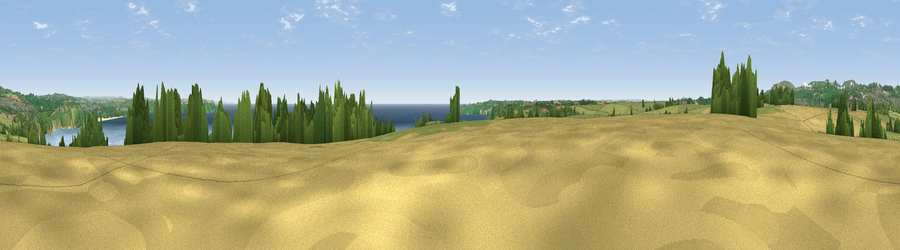

Lobb's Shop Hill
#3699 in England · top 7% of its area beats it · near PentewanThe view, rendered

A 360° render of this exact spot computed from the terrain model, tree cover and land cover — summer colours, afternoon light, calibrated against photographs of famous viewpoints. Real trees, hedges and buildings will differ in detail.
The panorama
Grey silhouette: terrain skyline in each direction (720 bearings, Earth curvature and refraction included). Dashed green: skyline with trees (+15 m) and buildings (+8 m) as obstacles. Blue strip: how far the ground is visible on each bearing.
Where the view opens
Wedge length = distance to the farthest visible ground on that bearing (vegetation-aware). Rings at 10, 25 and 50 km.
What fills the view
39% water · 33% grassland · 13% cropland · 11% woodland · 4% built-up
Angular shares of the visible panorama (visual magnitude), not map area. Landscape diversity 0.60 (0–1 Shannon).
Key numbers
More beautiful places nearby
The staircase of upgrades: each row has a higher view potential than everything closer. Driving times are estimates from straight-line distance, calibrated against real road routing — check an actual route before setting out.
| Place | Direction | Drive | Score |
|---|---|---|---|
| Viewpoint near Pentewan | ESE · 1 km | ~3 min | 74.7 |
| Viewpoint near St Austell | NNW · 5 km | ~11 min | 77.4 |
| Viewpoint near Trethurgy | N · 5 km | ~12 min | 79.8 |
| Viewpoint near Trethurgy | N · 6 km | ~13 min | 84.1 |
| Viewpoint near Foxhole | NW · 7 km | ~15 min | 84.3 |
| Viewpoint near Foxhole | NW · 8 km | ~15 min | 86.4 |
| Viewpoint near Stenalees | NNW · 9 km | ~17 min | 88.0 |
| Viewpoint near Crackington Haven | N · 46 km | ~67 min | 88.1 |
50.30902, -4.76764 · source: dobih hill · position refined by local search. Computed location — check access rights before visiting.